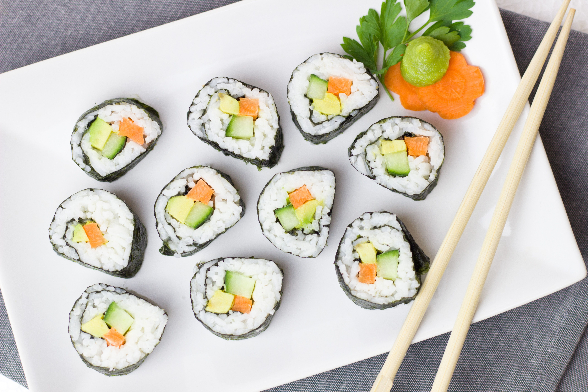

Sushi Rolls!
Home

Description
Generic yet simple sushi recipe you can easily follow at home easily! It uses few ingredients and can be followed very easily.
- 1 1/3 cups water
- 2/3 cup uncooked short-grain white rice
- 3 tbsp rice vinegar
- 3 tbsp white sugar
- 1 1/2 tsp salt
- 4 sheets of nori seaweed sheets
- 1/2 pound imitation crabmeat, flaked
- 1 avocado - peeled, pitted and sliced
- 1/2 cucumber, peeled, cut into small strips
- 2 tbps pickled ginger
Steps
- Gather ingredients. Preheat oven to 150 deg C.
- Bring water to a boil in a medium pot and stir in rice. Reduce heat to medium-low, cover and simmer until rice is tender and water has been absorbed, 20 to 25 minutes.
- Mix rice, vinegar, sugar, and salt in a small bowl. Gently stir into cooked rice in the pot and set aside, uncovered, to let rice cool.
- Lay nori sheets on baking sheet.
- Heat nori in preheated oven until warm, 1-2 minutes.
- Center 1 nori sheet on a bamboo sushi mat. Use wet hands to spread a thin layer of rice on top. Arrange 1/4 of the crabmeat, avocado, cucumber, and pickled ginger over rice in a line down the center.
- Lift one end of the mat and roll it tightly over filling to make a complete roll. Repeat with remaining ingredients.
- Use a wet, sharp knife to cut each roll into 4 to 6 slices.
- Enjoy!